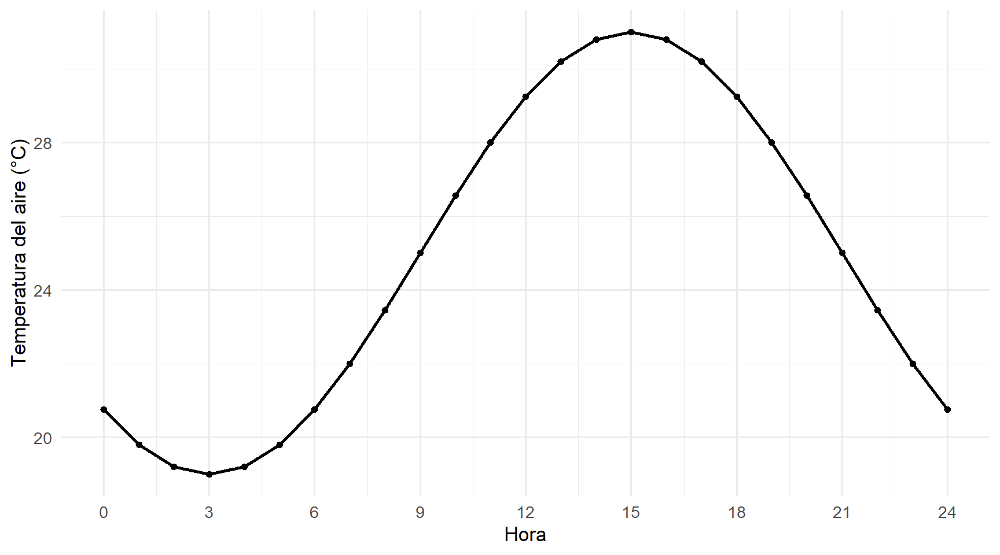
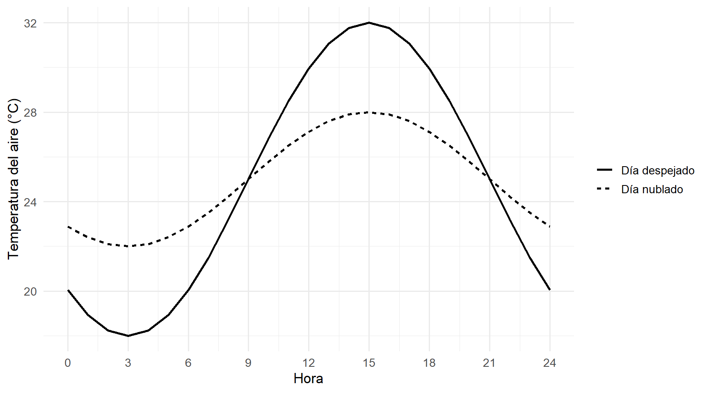
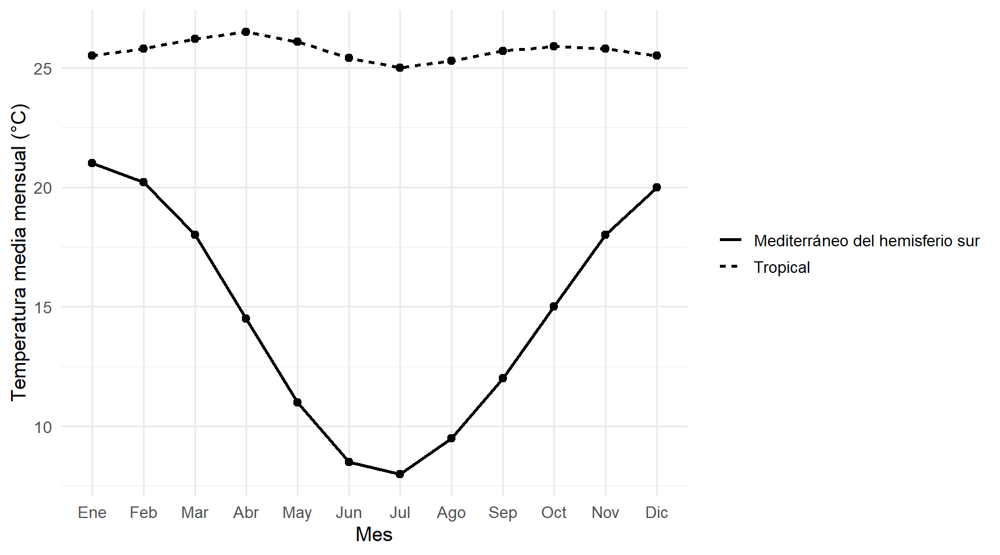
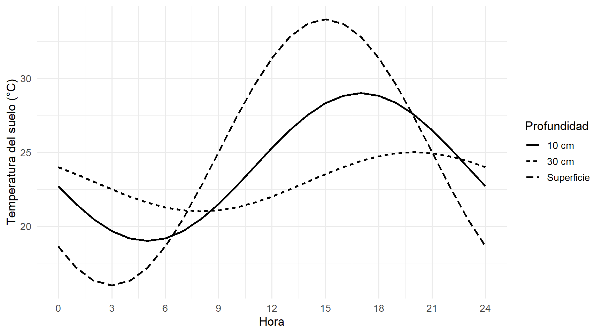
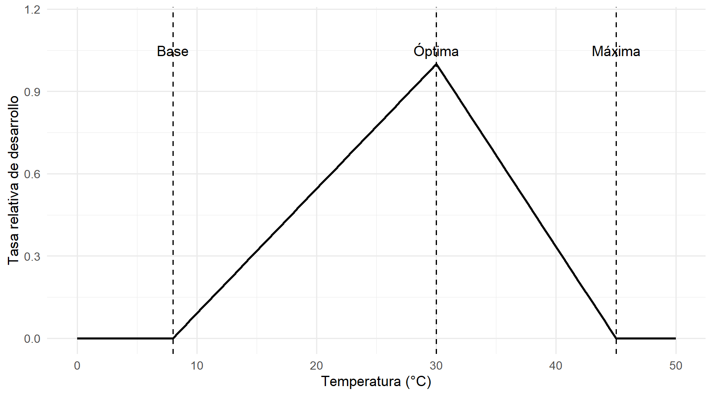

Explicar qué es la temperatura y diferenciarla del calor.
Relacionar la temperatura del aire y del suelo con el balance de energía.
Interpretar la variación diaria, anual y vertical de la temperatura.
Calcular temperatura media, amplitud térmica diaria y amplitud térmica anual.
Reconocer las principales causas y consecuencias de una inversión térmica.
Analizar los efectos de la temperatura sobre plantas, animales y procesos del suelo.
Explicar y calcular temperaturas cardinales, grados-día y horas frío.
Aplicar la información térmica a decisiones agronómicas y ambientales.
1. ¿Qué es la temperatura?
La temperatura es una magnitud física que expresa el estado térmico de un cuerpo o sustancia. A nivel microscópico, está relacionada con la energía cinética promedio de sus moléculas.
En meteorología, la temperatura del aire representa el estado térmico del aire medido a una altura conocida sobre la superficie. La Organización Meteorológica Mundial considera la temperatura del aire cerca de la superficie una variable climática esencial.
Temperatura no es lo mismo que calor
Temperatura: indica qué tan caliente o frío se encuentra un cuerpo.
Calor: es energía que se transfiere entre cuerpos debido a una diferencia de temperatura.
El calor fluye espontáneamente desde el cuerpo con mayor temperatura hacia el cuerpo con menor temperatura.
1.1 ¿Por qué es importante en climatología agroambiental?
La temperatura influye directamente en:
la velocidad de reacciones físicas, químicas y biológicas;
la germinación y emergencia de los cultivos;
la fotosíntesis, respiración y transpiración;
el crecimiento y desarrollo fenológico;
la absorción de agua y nutrientes;
la actividad de microorganismos del suelo;
la evaporación y la evapotranspiración;
la supervivencia, reproducción y productividad de los animales;
la aparición de heladas, olas de calor y estrés térmico;
la dispersión de contaminantes en la atmósfera.
La temperatura también modifica la presión de vapor de saturación: el aire cálido puede contener una mayor cantidad de vapor de agua antes de alcanzar la saturación. Por ello, temperatura y humedad deben analizarse de manera conjunta.
2. ¿Cómo se calientan la superficie y el aire?
La principal fuente de energía del sistema climático es la radiación solar. Sin embargo, el aire cercano al suelo no se calienta únicamente por absorber radiación solar de forma directa. Gran parte del calentamiento ocurre desde la superficie hacia la atmósfera.
El proceso puede resumirse así:
flowchart LR
A[Radiación solar] --> B[Superficie terrestre]
B --> C[Calentamiento del suelo y la vegetación]
C --> D[Transferencia de calor sensible al aire]
C --> E[Evaporación y transpiración]
C --> F[Flujo de calor hacia el suelo]
B --> G[Emisión de radiación de onda larga]
2.1 Balance energético de la superficie
Una forma simplificada de expresar el balance de energía es:
\[
R_n = H + \lambda E + G + \Delta S
\]
Donde:
\(R_n\): radiación neta;
\(H\): flujo de calor sensible hacia el aire;
\(\lambda E\): flujo de calor latente asociado con evaporación y transpiración;
\(G\): flujo de calor hacia o desde el suelo;
\(\Delta S\): cambio en el almacenamiento de energía.
Idea clave
La temperatura es, en gran medida, una consecuencia del balance de energía. Dos superficies que reciben la misma radiación pueden alcanzar temperaturas diferentes si difieren en humedad, cobertura vegetal, color, capacidad térmica o disponibilidad de agua.
2.2 ¿Por qué una superficie húmeda suele calentarse menos?
Cuando existe agua disponible, una parte importante de la energía se utiliza en evaporarla. Esa energía se transforma en calor latente y no aumenta inmediatamente la temperatura de la superficie.
En una superficie seca, una mayor proporción de la energía disponible se convierte en calor sensible. Por eso, durante el día, un suelo seco puede calentarse más que un suelo húmedo.
No confundir
Una mayor radiación solar no siempre produce el mismo aumento de temperatura. La respuesta depende de cómo se reparte la energía entre calor sensible, calor latente y calentamiento del suelo.
3. Medición de la temperatura del aire
La temperatura del aire debe medirse de manera que el sensor represente al aire y no el calentamiento directo producido por la radiación solar.
Por ello, el instrumento se instala normalmente:
dentro de una garita o abrigo meteorológico, o bajo un protector de radiación;
en un lugar ventilado;
sobre una superficie representativa;
lejos de paredes, pavimento, maquinaria u otras fuentes artificiales de calor;
a una altura estandarizada sobre el terreno.
Los instrumentos más frecuentes son:
termómetro de máxima;
termómetro de mínima;
termógrafo;
sensores electrónicos y registradores automáticos.
3.1 Temperaturas máxima, mínima y media
Temperatura máxima (\(T_{max}\)): mayor temperatura registrada durante el día.
Temperatura mínima (\(T_{min}\)): menor temperatura registrada durante el día.
Temperatura media diaria (\(T_{media}\)): valor representativo del estado térmico promedio del día.
Cuando solo se dispone de la máxima y la mínima, suele utilizarse:
\[
T_{media} = \frac{T_{max}+T_{min}}{2}
\]
Esta fórmula es una aproximación
La media calculada con \(T_{max}\) y \(T_{min}\) puede diferir de la media obtenida a partir de 24 observaciones horarias. La diferencia aumenta cuando la curva diaria de temperatura es muy asimétrica.
La temperatura del aire no alcanza sus valores extremos al mismo tiempo que la radiación solar.
En un día despejado típico:
la temperatura mínima ocurre cerca de la salida del Sol;
después del amanecer, la superficie comienza a ganar energía y la temperatura aumenta;
el máximo suele presentarse algunas horas después del mediodía solar;
durante la tarde y la noche, la superficie pierde energía y la temperatura disminuye.

Figure 1: Ejemplo conceptual del ciclo diario de la temperatura del aire.
4.1 Amplitud térmica diaria
La amplitud térmica diaria (ATD) es la diferencia entre la temperatura máxima y la temperatura mínima de un mismo día:
\[
ATD=T_{max}-T_{min}
\]
Para el ejemplo anterior:
\[
ATD=35-19=16\ ^\circ\mathrm{C}
\]
La ATD informa cuánto varió la temperatura durante el día. No representa la temperatura promedio.
4.2 Factores que modifican la amplitud térmica diaria
Nubosidad
Las nubes tienden a reducir la amplitud térmica diaria:
durante el día reflejan parte de la radiación solar y limitan el calentamiento;
durante la noche absorben y reemiten radiación de onda larga hacia la superficie, reduciendo el enfriamiento.

Figure 2: Representación conceptual del efecto de la nubosidad sobre el ciclo diario de temperatura.
Cercanía al mar o a grandes masas de agua
El agua tiene una alta capacidad térmica y cambia de temperatura más lentamente que el suelo. Por esta razón:
las zonas costeras suelen presentar máximas menos elevadas durante el día;
las mínimas suelen ser menos bajas durante la noche;
la amplitud térmica diaria suele ser menor que en zonas continentales.
Humedad del suelo y cobertura vegetal
Un suelo húmedo y cubierto por vegetación utiliza más energía en evapotranspiración. En general, esto modera el calentamiento diurno.
Viento
El viento mezcla el aire cercano a la superficie con capas superiores. Una mayor mezcla puede reducir el enfriamiento nocturno intenso y limitar extremos térmicos locales.
Topografía
Durante noches despejadas y con poco viento, el aire frío y denso puede descender por las laderas y acumularse en depresiones. En consecuencia, el fondo de un valle puede presentar temperaturas menores que una ladera situada a mayor altura.
Aplicación agronómica
Para evaluar riesgo de helada no basta con conocer la altitud. También debe considerarse la posición topográfica: bajo ciertas condiciones, una depresión puede ser más fría que una ladera cercana.
Comprobación rápida
Una estación registra \(T_{max}=29\ ^\circ\mathrm{C}\) y \(T_{min}=17\ ^\circ\mathrm{C}\).
La temperatura también cambia a lo largo del año debido principalmente a la variación estacional de la radiación solar recibida.
La magnitud de esa variación depende de:
latitud;
altitud;
distancia al mar;
circulación atmosférica;
nubosidad;
características locales del relieve.
5.1 Amplitud térmica anual
La amplitud térmica anual (ATA) es la diferencia entre la temperatura media del mes más cálido y la temperatura media del mes más frío:
\[
ATA=T_{mes\ más\ cálido}-T_{mes\ más\ frío}
\]
ATD y ATA no son lo mismo
ATD: diferencia entre la máxima y la mínima de un día.
ATA: diferencia entre las temperaturas medias del mes más cálido y del mes más frío.

Figure 3: Comparación conceptual de la temperatura mensual en un clima tropical y uno mediterráneo.
5.2 Régimen térmico intertropical
En las tierras bajas de la zona intertropical suele observarse:
temperatura media mensual relativamente alta;
amplitud térmica anual pequeña;
radiación solar disponible durante todo el año;
estaciones térmicas menos contrastadas que en latitudes medias.
En muchas localidades tropicales, la amplitud térmica diaria puede ser mayor que la amplitud térmica anual. Esto significa que la diferencia entre el día y la noche puede superar la diferencia entre el mes más cálido y el más frío.
Importante
La expresión “clima tropical” no significa que todas las localidades sean igualmente cálidas. En la región intertropical, la altitud puede producir desde pisos muy cálidos hasta ambientes fríos de montaña.
5.3 Comparación entre ambientes tropicales y mediterráneos
Característica
Ambiente tropical de tierras bajas
Ambiente mediterráneo
Variación anual
Generalmente baja
Generalmente marcada
Verano
Puede coincidir con estación lluviosa o seca
Cálido y seco
Invierno
Poco contrastado térmicamente en tierras bajas
Más frío y lluvioso
Riesgo térmico
Calor persistente, noches cálidas
Heladas invernales y olas de calor estivales
Manejo agrícola
Fechas condicionadas por lluvia y calor
Fechas condicionadas por estación fría, sequía y calor estival
6. Variación de la temperatura con la altura
En la troposfera, la temperatura suele disminuir con la altitud. Esta disminución se denomina gradiente térmico vertical o gradiente altotérmico.
Como aproximación general puede considerarse una disminución cercana a:
Sin embargo, este valor no es constante. Cambia según la humedad, la estabilidad atmosférica, la hora del día, la estación y las características regionales.
Ejemplo
Una localidad se encuentra a 500 m de altitud y registra 24 °C. Se desea estimar la temperatura aproximada a 1 500 m utilizando un gradiente de 0,6 °C por cada 100 m.
No usar esta aproximación como sustituto de datos locales
Para estudios agronómicos detallados, el gradiente debe estimarse con observaciones de estaciones ubicadas a diferentes altitudes y, de ser posible, con registros simultáneos.
7. Inversiones térmicas
En condiciones normales, la temperatura disminuye con la altura. Existe una inversión térmica cuando, dentro de una capa de la atmósfera, la temperatura aumenta con la altura.
flowchart TB
A[Situación normal] --> B[El aire es más cálido cerca de la superficie]
B --> C[La temperatura disminuye con la altura]
D[Inversión térmica] --> E[Aire frío cerca de la superficie]
E --> F[Aire más cálido sobre la capa fría]
7.1 Tipos principales
Inversión por radiación
Se forma generalmente durante noches despejadas, secas y con poco viento:
la superficie pierde energía por emisión de onda larga;
el suelo se enfría;
el aire en contacto con el suelo también se enfría;
queda una capa fría cerca de la superficie y aire relativamente más cálido encima.
Es especialmente importante para el riesgo de heladas.
Inversión por subsidencia
Se produce cuando una masa de aire desciende. Al descender, el aire se comprime y se calienta adiabáticamente, formando una capa cálida sobre aire más frío cercano a la superficie.
Inversión por advección
Se produce cuando aire cálido se desplaza sobre una superficie fría, o cuando aire frío se mueve por debajo de una masa de aire más cálida.
Inversión frontal
Aparece en la zona de contacto entre masas de aire con diferentes temperaturas y densidades.
7.2 Consecuencias agronómicas y ambientales
Las inversiones pueden:
aumentar el riesgo de heladas en valles y depresiones;
limitar la mezcla vertical del aire;
favorecer la acumulación de humo, polvo y contaminantes;
reducir la dispersión de aplicaciones agrícolas;
generar diferencias térmicas importantes entre el dosel del cultivo y el aire situado a mayor altura.
Aplicaciones de productos agrícolas
Durante una inversión térmica, gotas finas o vapores pueden permanecer suspendidos y desplazarse horizontalmente cuando la inversión se rompe o cambia el viento. Deben respetarse las instrucciones de la etiqueta, las restricciones legales y las condiciones meteorológicas adecuadas para cada aplicación.
8. Temperatura del suelo
La temperatura del suelo controla numerosos procesos físicos, químicos y biológicos.
Entre sus efectos se encuentran:
germinación y emergencia;
crecimiento de raíces;
absorción de agua y nutrientes;
actividad microbiana;
descomposición de residuos;
mineralización de la materia orgánica;
evaporación;
volatilización de compuestos;
meteorización física.
8.1 ¿De qué depende?
La temperatura del suelo está influida por:
radiación solar;
color y albedo;
contenido de agua;
textura y estructura;
cobertura vegetal o residuos;
profundidad;
orientación y pendiente;
temperatura del aire.
8.2 Variación con la profundidad
A medida que aumenta la profundidad:
disminuye la amplitud de las fluctuaciones térmicas;
se retrasa la hora en que ocurre la máxima y la mínima;
la temperatura se vuelve más estable.

Figure 4: Ejemplo conceptual de la variación diaria de la temperatura del suelo a diferentes profundidades.
Ejemplo de manejo
Una cobertura de residuos puede reducir el calentamiento diurno y el enfriamiento nocturno del suelo. Esto suele disminuir la amplitud térmica y conservar humedad, aunque el efecto exacto depende del clima y del tipo de cobertura.
9. Efectos de la temperatura en los sistemas agroambientales
Una temperatura elevada puede acelerar el desarrollo, pero no necesariamente aumentar el rendimiento. Un ciclo demasiado rápido puede reducir el tiempo disponible para acumular biomasa o llenar granos y frutos.
La temperatura influye en:
consumo de alimento;
consumo de agua;
ganancia de peso;
fertilidad;
producción de leche, carne o huevos;
comportamiento;
respiración y sudoración;
mortalidad en situaciones extremas.
El efecto depende también de la humedad, radiación, viento, sombra, raza, edad, estado productivo y aclimatación.
La temperatura regula:
actividad microbiana;
descomposición;
mineralización;
nitrificación;
crecimiento de raíces;
difusión de gases;
evaporación;
disponibilidad temporal de nutrientes.
Temperaturas muy bajas ralentizan la mayoría de los procesos biológicos. Temperaturas excesivas pueden dañar raíces y microorganismos, especialmente cerca de la superficie.
10. Temperaturas cardinales
Para cada especie y proceso biológico pueden definirse tres temperaturas cardinales:
Temperatura base o mínima (\(T_b\)): por debajo de ella el desarrollo es muy lento o se detiene.
Temperatura óptima (\(T_{opt}\)): rango en el que la tasa del proceso es máxima.
Temperatura máxima (\(T_{max}\)): por encima de ella el proceso disminuye fuertemente o cesa.

Figure 5: Respuesta conceptual de la tasa de desarrollo a la temperatura.
10.1 Rangos orientativos
Grupo de cultivos
Temperatura base aproximada
Óptimo aproximado
Máxima aproximada
Cereales de clima templado
0–5 °C
20–30 °C
35–40 °C
Cultivos tropicales de estación cálida
10–18 °C
30–37 °C
40–50 °C
Los valores no son universales
Las temperaturas cardinales dependen de la especie, cultivar, etapa fenológica, órgano evaluado, duración de la exposición y disponibilidad de agua. Para una aplicación real deben consultarse valores específicos del cultivo y la región.
10.2 Temperatura, fotosíntesis y respiración
Al aumentar la temperatura dentro de un rango favorable:
la fotosíntesis puede aumentar hasta alcanzar un óptimo;
la respiración también aumenta;
a temperaturas elevadas, la respiración puede consumir una proporción mayor de los asimilados;
si la fotosíntesis disminuye y la respiración continúa alta, baja la asimilación neta.
Por ello, un crecimiento más rápido bajo calor no siempre significa mayor producción de materia seca.
11. Grados-día o tiempo térmico
Los grados-día representan la acumulación de calor útil para el desarrollo de una planta, insecto u otro organismo.
La idea central es que el desarrollo biológico depende más del calor acumulado que del número de días del calendario.
11.1 Cálculo básico diario
\[
GD_i=\max(T_{media,i}-T_b,\ 0)
\]
Donde:
\(GD_i\): grados-día acumulados en el día \(i\);
\(T_{media,i}\): temperatura media del día;
\(T_b\): temperatura base del organismo o proceso.
El acumulado para \(n\) días es:
\[
GD_{acumulados}=\sum_{i=1}^{n} GD_i
\]
El uso de \(\max(\ ,0)\) evita acumular valores negativos cuando la temperatura media se encuentra por debajo de la temperatura base.
11.2 Ejemplo resuelto
Supongamos un cultivo con \(T_b=8.3\ ^\circ\mathrm{C}\).
Día
\(T_{media}\)
Cálculo
GD diario
GD acumulado
1
27 °C
\(27-8.3\)
18.7
18.7
2
28 °C
\(28-8.3\)
19.7
38.4
3
26 °C
\(26-8.3\)
17.7
56.1
Si el cultivo requiere 2 500 grados-día para alcanzar la madurez, se espera que llegue a esa fase cuando la suma acumulada alcance aproximadamente dicho valor.
¿Para qué sirven?
Los grados-día pueden ayudar a estimar fechas de emergencia, floración, madurez o cosecha; programar muestreos; anticipar estados de plagas; y comparar ciclos entre localidades o fechas de siembra.
11.3 Supuestos y limitaciones
El método básico supone que:
la tasa de desarrollo aumenta aproximadamente de forma lineal sobre la temperatura base;
la temperatura del aire representa razonablemente la temperatura del organismo;
el cultivo no permanece demasiado tiempo por encima del óptimo;
otros factores, como agua, fotoperíodo, nutrición o estrés, no limitan fuertemente el desarrollo.
Cuando existen umbrales superiores o una respuesta no lineal, se requieren métodos más completos.
Actividad guiada
Un cultivo tiene una temperatura base de 10 °C. Durante cinco días se registran temperaturas medias de 9, 14, 18, 20 y 16 °C.
Calcule los grados-día diarios y acumulados.
Ver respuesta
Día
Temperatura media
GD diario
GD acumulado
1
9 °C
0
0
2
14 °C
4
4
3
18 °C
8
12
4
20 °C
10
22
5
16 °C
6
28
Al finalizar el quinto día se han acumulado 28 °C·día.
12. Horas frío y acumulación de frío
Las especies frutales caducifolias entran en reposo durante la estación fría. Para salir adecuadamente de ese estado requieren acumular una determinada cantidad de frío.
El requerimiento depende de:
especie;
cultivar;
estado de las yemas;
patrón térmico durante el invierno;
interacción entre frío acumulado y calor posterior.
Cuenta el número de horas con temperatura por debajo de un umbral, con frecuencia cercano a 7 °C o 7,2 °C.
Es fácil de calcular, pero considera todas las horas frías como equivalentes y no representa bien el efecto de temperaturas cálidas intercaladas.
Asigna diferentes eficiencias a distintos rangos de temperatura. Algunas temperaturas aportan unidades de frío y las temperaturas altas pueden restarlas.
Puede funcionar bien en ciertos climas, pero presentar dificultades en inviernos suaves con tardes cálidas.
Representa la acumulación de frío como un proceso de dos etapas y expresa el resultado en porciones de frío.
Suele comportarse mejor en climas de inviernos variables o relativamente cálidos, aunque su cálculo es más complejo.
Interpretación correcta
No debe compararse directamente un requerimiento expresado en horas frío con otro expresado en unidades Utah o porciones de frío. Cada modelo tiene su propia escala.
Consecuencias de un frío insuficiente
brotación irregular;
floración prolongada o desuniforme;
baja sincronización floral;
reducción del cuajado;
disminución del rendimiento y la calidad;
mayor dificultad para programar labores.
13. Confort térmico y estrés por calor en animales
El confort térmico corresponde al rango de condiciones ambientales en el que el animal mantiene su temperatura corporal con un esfuerzo mínimo de termorregulación.
Cuando aumenta la carga térmica, el animal puede responder mediante:
búsqueda de sombra;
aumento del consumo de agua;
reducción del consumo de alimento;
incremento de la frecuencia respiratoria;
sudoración;
disminución de la actividad;
reducción de la producción.
13.1 Índice temperatura-humedad
El índice temperatura-humedad, conocido como THI o ITH, combina temperatura y humedad relativa para representar el riesgo de estrés térmico.
Una formulación utilizada en bovinos es:
\[
THI=(1.8T+32)-(0.55-0.0055HR)(1.8T-26)
\]
Donde:
\(T\): temperatura del aire en °C;
\(HR\): humedad relativa en %.
Los umbrales dependen del contexto
La interpretación del THI varía según especie, raza, edad, nivel productivo, radiación, velocidad del viento, exposición al Sol y aclimatación. El índice no debe utilizarse como único criterio de manejo.
Medidas básicas de mitigación
acceso continuo a agua limpia;
sombra suficiente;
ventilación natural o forzada;
reducción de la densidad animal;
ajuste de horarios de alimentación y manejo;
sistemas de enfriamiento cuando correspondan;
vigilancia de animales vulnerables.
14. Temperatura, estabilidad atmosférica y contaminación
La dispersión de contaminantes depende de:
estabilidad atmosférica;
perfil vertical de temperatura;
velocidad y dirección del viento;
altura de la capa de mezcla;
topografía;
características de la fuente emisora.
Durante una inversión térmica, la mezcla vertical se debilita. Los contaminantes pueden quedar atrapados cerca de la superficie y alcanzar concentraciones elevadas.
flowchart LR
A[Superficie fría] --> B[Capa de aire frío]
B --> C[Capa de aire cálido superior]
C --> D[Se limita la mezcla vertical]
D --> E[Acumulación de contaminantes cerca del suelo]
Esta situación es relevante para:
humo de incendios y quemas;
emisiones urbanas e industriales;
polvo;
olores;
deriva y volatilización de productos agrícolas.
15. Temperatura y cambio climático
El Sexto Informe de Evaluación del IPCC concluyó que las actividades humanas han causado inequívocamente el calentamiento global. La temperatura media de la superficie durante 2011–2020 fue aproximadamente 1,1 °C superior a la de 1850–1900.
Entre los riesgos agroambientales asociados al calentamiento se encuentran:
mayor frecuencia e intensidad de extremos cálidos;
cambios en la duración de las estaciones de crecimiento;
adelanto de fases fenológicas;
mayor demanda evaporativa;
estrés térmico en cultivos y ganado;
modificación de la distribución de plagas y enfermedades;
menor acumulación de frío en frutales caducifolios;
mayor riesgo de incendios en regiones vulnerables;
interacción entre calor, sequía y degradación del suelo.
El efecto no es uniforme
Un aumento de temperatura puede extender temporalmente la estación de crecimiento en algunos ambientes fríos. Sin embargo, en zonas que ya se encuentran cerca del óptimo térmico de los cultivos, un calentamiento adicional puede reducir rendimiento, calidad y estabilidad productiva.
15.1 Decisiones de adaptación
La información térmica puede apoyar:
selección de especies y cultivares;
cambio de fechas de siembra;
manejo de sombra y ventilación;
elección de sitios según altitud y topografía;
ajuste del riego;
monitoreo de grados-día y horas frío;
sistemas de alerta de heladas y olas de calor;
diseño de infraestructura agrícola.
16. Integración de conceptos
flowchart TD
A[Radiación y balance de energía] --> B[Temperatura del aire y del suelo]
B --> C[Variación diaria]
B --> D[Variación anual]
B --> E[Variación con la altura]
C --> F[ATD y extremos diarios]
D --> G[ATA y estacionalidad]
E --> H[Gradiente e inversiones]
B --> I[Procesos biológicos]
I --> J[Temperaturas cardinales]
I --> K[Grados-día]
I --> L[Horas frío]
I --> M[Confort animal]
H --> N[Heladas y contaminación]
17. Síntesis
La temperatura expresa el estado térmico, mientras que el calor es energía en transferencia.
La superficie terrestre absorbe energía y calienta el aire principalmente mediante intercambios de calor sensible y latente.
La temperatura presenta ciclos diarios, anuales y verticales.
La ATD se calcula con la máxima y mínima del día; la ATA compara el mes más cálido con el más frío.
Nubosidad, mar, viento, humedad y topografía modifican los extremos térmicos.
En una inversión térmica, la temperatura aumenta con la altura dentro de una capa, lo que puede favorecer heladas y acumulación de contaminantes.
La temperatura del suelo regula germinación, raíces, microorganismos y disponibilidad de nutrientes.
Las temperaturas cardinales describen los límites y el óptimo de los procesos biológicos.
Los grados-día representan calor acumulado para el desarrollo; las horas frío representan requerimientos de reposo en frutales caducifolios.
La temperatura debe interpretarse junto con humedad, radiación, viento, agua disponible y estado biológico.
18. Fuentes y lecturas recomendadas
Material base: Puche, M. Climatología Agroambiental. Clase 5: Temperatura. Universidad Central de Venezuela.
Thom, E. C. (1959). The discomfort index. Weatherwise.
Para continuar
La aplicación natural de esta clase es una práctica con datos diarios de temperatura. Allí pueden calcularse temperatura media, ATD, ATA, grados-día, número de días sobre un umbral de calor y número de días bajo un umbral de frío.